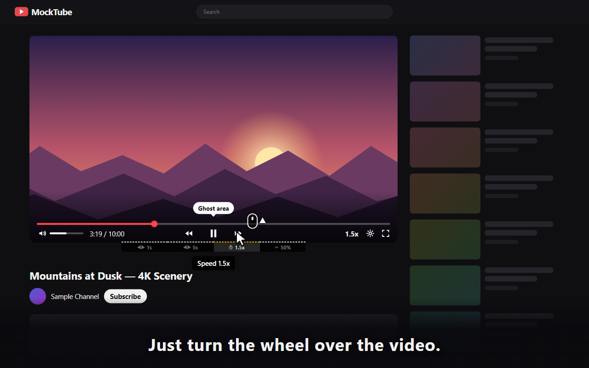
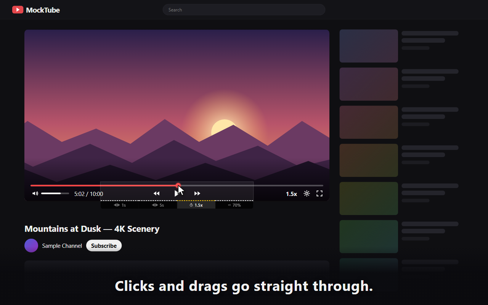
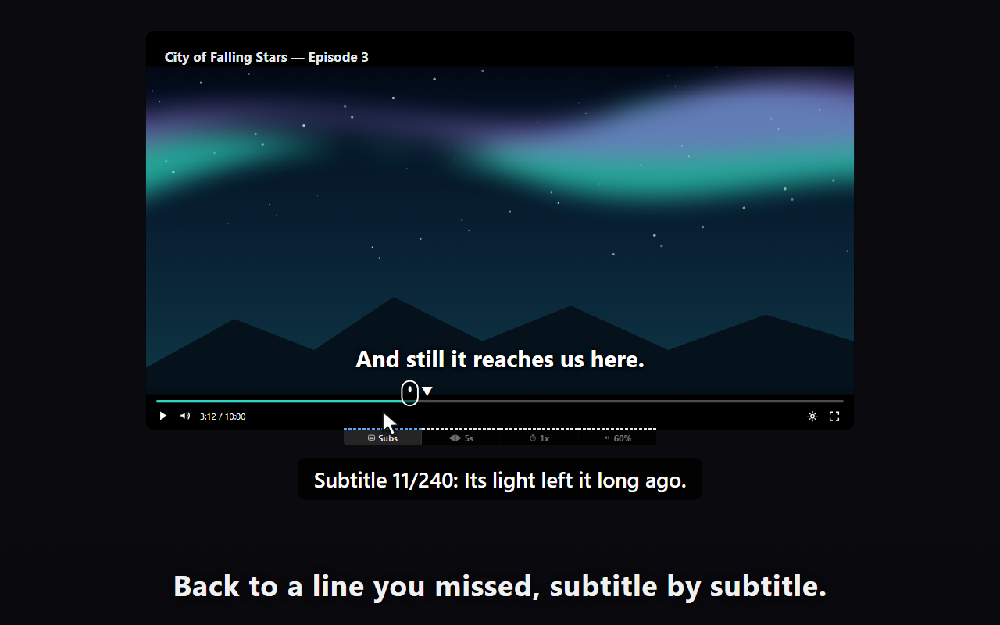
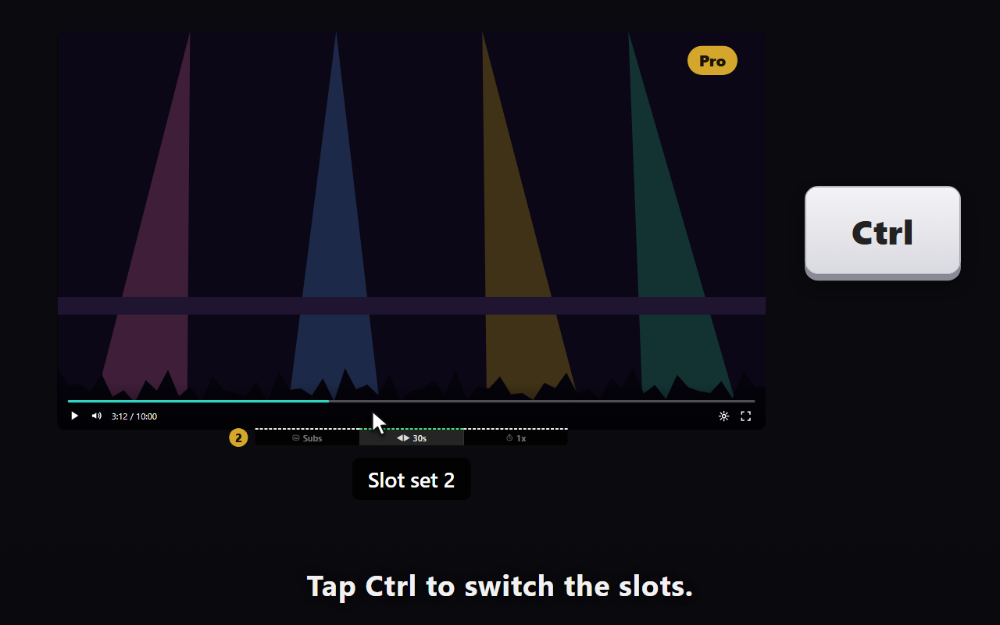
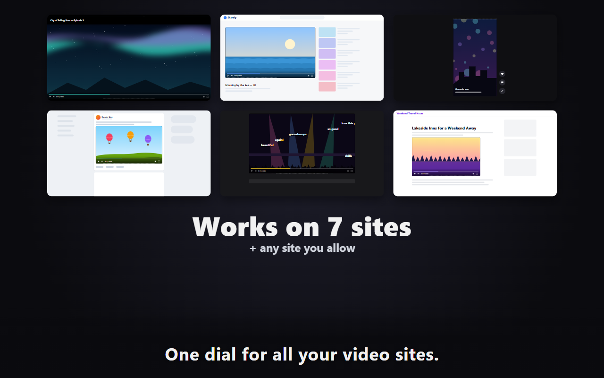

Ghost Video Dial — press kit
A Chrome extension that lets you seek, change the playback speed, set the volume and move subtitle by subtitle, just by turning the mouse wheel on the edge of the video. Clicks and drags still go straight to the site, and it never catches the wheel while you scroll the page. Works on YouTube, Netflix, Prime Video and four more sites, in 8 languages.
New in 2.1.0
- Move by subtitle: one notch of a Subtitles slot goes to the next or the last subtitle. While you turn, the line you will land on is shown, so a line you missed is one notch away (YouTube and Netflix, with subtitles on; not for subtitles written into the video picture).
- Slot set 2 (Pro): a second set of slots, switched with a short tap of Ctrl on the ghost area — one dial for everyday watching, another for language study.

Video (30 s)
Highlights
- An invisible “ghost area” sits on the video; turn the wheel there to seek, change the speed or set the volume.
- Clicks and drags pass straight through, so the site’s own buttons and seek bar work as always.
- It becomes a dial only when you move the pointer into it, so scrolling the page never gets caught.
- While you turn, a small label shows where you will land or the new value.
- Nothing about what you watch is sent to the developer or anyone else; subtitles are used only to show where you are moving to.
Screenshots (1280 × 800)





Facts
| Name | Ghost Video Dial (formerly On the Sofa for YouTube) |
|---|---|
| Platform | Google Chrome extension |
| Version | 2.1.0 (released October 18, 2026) |
| Sites | YouTube (videos and Shorts), Netflix, Prime Video, niconico, TikTok, Instagram, Facebook — and any other site the user allows. |
| Price | Free: four slots (±1 s, ±5 s, speed, volume). Pro: 600 yen per year (no auto-renewal; tax shown at checkout) — 1 to 10 slots, every slot type and step, slot set 2, per-site settings, up to 5 browsers per key. |
| Developer | Isao Ogihara, an independent developer in Hitachinaka, Ibaraki, Japan |
For journalists and reviewers
We are happy to send a free Pro license key for your review. Write to ogiharadevelopment@gmail.com with the name of your publication.
YouTube is a trademark of Google LLC. Netflix is a trademark of Netflix, Inc. Prime Video is a trademark of Amazon.com, Inc. or its affiliates. Ghost Video Dial is an independent tool and is not affiliated with, endorsed or sponsored by any of the video services it works with.